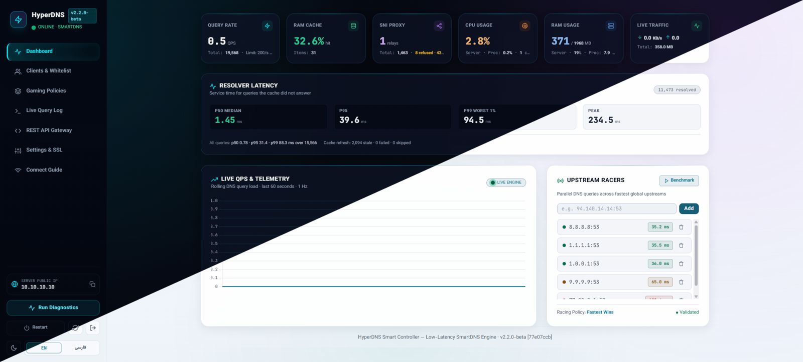

An ultra-fast single-binary SmartDNS server and transparent SNI proxy with an embedded cyberpunk web dashboard, developer REST API and 171+ gaming presets. Zero client software. Zero VPN overhead. Turn a $3 VPS into a private low-latency gateway for PC, PlayStation, Xbox, Switch, Android, iOS and routers.

Users set one DNS IP on their console or router. No app, no profile, no VPN tunnel.
Game UDP traffic connects directly to official servers — no double encryption, no MTU fragmentation.
Dynamic mobile & residential IPs update themselves via private one-click slugs.
Certificates are issued and renewed by the daemon itself. No certbot, no restarts.